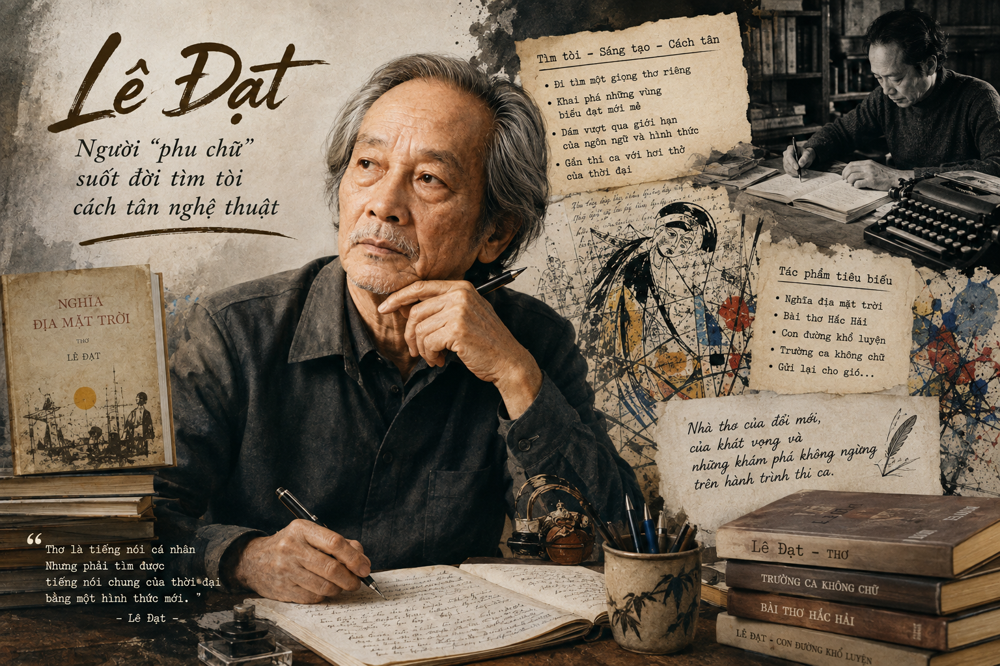

CHƯƠNG: NGHỆ THUẬT THUYẾT PHỤC TRONG VĂN NGHỊ LUẬN
CHỮ BẦU LÊN NHÀ THƠ
(Trích - Lê Đạt)
- Trong hình dung của bạn, nhà thơ phải là người thế nào? Bạn có cho rằng việc làm thơ gắn liền với những phút cao hứng, "bốc đồng"?
- Bạn nhớ hoặc thích định nghĩa nào về thơ, nhà thơ hay công việc làm thơ?
I QUAN NIỆM VỀ NGÔN NGỮ THƠ VÀ ĐẶC TRƯNG CỦA THƠ
1 Sự khác biệt giữa ngôn ngữ văn xuôi và ngôn ngữ thơ
Tóm tắt cốt lõi: Văn xuôi chủ yếu dựa vào "ý tại ngôn tại" (ý nằm gọn trong lời nói/chữ viết). Trái lại, thơ ca khác hẳn, dựa vào "ý tại ngôn ngoại" (ý ở ngoài lời, chưa nói hết được ý mà chỉ gợi mở) nên từ ngữ trong thơ luôn có tính đa nghĩa và sức gợi cảm lớn.
Câu hỏi suy ngẫm: Phải chăng tác giả đã nhầm khi viết "ý tại ngôn tại"?
2 Bản chất của "Chữ" trong thơ
Phát biểu quan trọng: "Người ta làm thơ không phải bằng ý mà bằng chữ."
Nhà thơ làm chữ không dừng lại ở "nghĩa tiêu dùng" (nghĩa trao đổi thông thường) hay "nghĩa tự vị" (nghĩa cố định trong từ điển), mà chú trọng vào diện mạo, âm lượng, độ vang vọng, sức gợi cảm và "hóa trị" (khả năng liên kết, gợi mở liên tưởng hữu cơ với câu, bài thơ).
Câu hỏi suy ngẫm: "Nghĩa tiêu dùng" và "nghĩa tự vị" – hai cụm từ này có diễn đạt cùng một ý không?
- Nghĩa tự vị: Nghĩa nguyên gốc, cố định được giải thích trong từ điển.
- Nghĩa tiêu dùng: Nghĩa thông dụng thực tế khi từ ngữ được giao tiếp hằng ngày.
[Hình minh họa h1.png: Sơ đồ so sánh Ngôn ngữ Văn xuôi và Ngôn ngữ Thơ]

II LAO ĐỘNG NGHỆ THUẬT VÀ TƯ CÁCH CỦA NHÀ THƠ
1 Phê phán quan niệm thơ ca cảm tính, "bốc đồng"
Thái độ của Lê Đạt: Tác giả không coi trọng những nhận định ca tụng thơ thuộc về "bốc đồng", "trời cho", "thiên phú" hay "thần đồng". Theo ông, những cơn bốc đồng thường ngắn ngủi và vốn "trời cho" cũng có thể cạn kiệt nếu nhà thơ chỉ dựa vào đó.
Câu hỏi suy ngẫm: Tác giả "rất ghét" hay "không mê" những gì? Ngược lại, ông "ưa" đối tượng nào?
Trả lời:
• Tác giả "rất ghét" định kiến quá gọ không biết xuất hiện từ bao giờ làm các nhà thơ Việt Nam chóng tàn;
• Tác giả "không mê" những nhà thơ thần đồng, phát tiết sớm rồi lụi tàn;
• Tác giả "ưa" những nhà thơ "một nắng hai sương", lầm lũi, lực điền trên cánh đồng giấy, đổi bát mồ hôi lấy từng hạt chữ.
2 Quan niệm "Chữ bầu lên nhà thơ"
Định luật sáng tạo: "Chữ bầu lên nhà thơ"
Không có "chức nhà thơ" suốt đời. Tư cách nhà thơ không do danh xưng tự phong hay bằng cấp trao tặng, mà chính kết quả lao động chữ nghĩa nghiêm túc, sự tìm tòi kiên trì tạo nên những trang thơ đích thực mới "bầu" nên danh xưng nhà thơ.
Câu hỏi suy ngẫm: "Không có chức nhà thơ suốt đời", vậy lúc nào một "nhà thơ" không còn là nhà thơ nữa?
[Hình minh họa h2.png: Biểu tượng Lao động chữ nghĩa của nhà thơ]

III HƯỚNG DẪN TRẢ LỜI CÂU HỎI CỦA VĂN BẢN (SGK)
Câu 1: Vấn đề chính được bàn luận trong văn bản này là gì?
Câu 2: Hãy tìm trong văn bản một câu có thể nêu bật được ý cốt lõi trong quan niệm về thơ của tác giả.
Câu 3: Ở phần 2 của văn bản, tác giả đã tranh luận với hai quan niệm khá phổ biến nào? Lí lẽ, bằng chứng tác giả nêu lên có thuyết phục không?
Lời giải chi tiết: Tác giả tranh luận với 2 quan niệm:
1. Thơ gắn liền với cảm xúc bốc đồng, làm thơ không cần cố gắng;
2. Thơ là năng khiếu đặc biệt (thiên phú, thần đồng) không cần trăn trở học vấn.
Sức thuyết phục: Rất thuyết phục vì tác giả dẫn chứng các nhà thơ vĩ đại thế giới (Lý Bạch, Xa-a-đi, Gớt, Ta-go, Pi-cát-xô...) đều lao động nghệ thuật bền bỉ cho đến già.
Câu 4: Tác giả không trực tiếp định nghĩa khái niệm "chữ". Dựa vào "ý tại ngôn ngoại", bạn hãy thử định nghĩa khái niệm này.
Câu 5: Bạn có ý kiến gì về luận điểm: "Nhà thơ làm chữ chủ yếu không phải ở 'nghĩa tiêu dùng'..."? Đưa ra ví dụ minh họa.
Lời giải chi tiết: Hoàn toàn đồng ý. Trong giao tiếp hằng ngày ("nghĩa tiêu dùng"), từ ngữ dùng để truyền đạt thông tin trực tiếp. Nhưng trong thơ, từ ngữ tạo dựng thế giới biểu cảm rộng lớn.
Ví dụ: Từ "lá dưa" hay "bánh tráng" trong thơ Nguyễn Bỉnh Khiêm hay từ "rơi" trong "Cánh hoa rụng âm thầm trong hạ" không chỉ tả hành động mà gợi không gian tâm trạng lắng đọng sâu lắng.
Câu 6: Bài viết giúp bạn hiểu thêm gì về hoạt động sáng tạo thơ ca?
✋ HOẠT ĐỘNG: KẾT NỐI ĐỌC - VIẾT
Nhiệm vụ: Viết đoạn văn (khoảng 150 chữ) nêu suy nghĩ về một nhận định mà bạn thấy tâm đắc trong văn bản "Chữ bầu lên nhà thơ" của Lê Đạt.
Đoạn văn tham khảo (Nhận định "Chữ bầu lên nhà thơ"):
Trong văn bản "Chữ bầu lên nhà thơ", em đặc biệt tâm đắc với khẳng định: "Chữ bầu lên nhà thơ" của Lê Đạt. Nhận định này đã chạm đúng bản chất của lao động nghệ thuật đích thực. Danh xưng nhà thơ không đến từ những định kiến xã hội, tự phong hay phút bốc đồng nhất thời, mà phải được bảo chứng bằng chính những giá trị ngôn từ mà người nghệ sĩ chắt lọc trên trang giấy. Từ ngữ trong thơ không đơn thuần là công cụ giao tiếp hằng ngày mà là sinh thể có diện mạo, độ vang và sức gợi sâu sắc. Một nhà thơ chân chính phải là người lực điền miệt mài trên cánh đồng chữ nghĩa, chấp nhận cuộc ứng cử khắc nghiệt trước cử tri "chữ" để mang lại vẻ đẹp phong phú cho tiếng mẹ đẻ. Ý kiến của Lê Đạt không chỉ tôn vinh giá trị của ngôn từ mà còn là bài học về thái độ lao động nghiêm túc cho bất kỳ ai dấn thân vào con đường sáng tạo nghệ thuật.
EM CÓ BIẾT?
Nhà thơ Lê Đạt (1929 – 2008): Tên khai sinh là Đào Công Đạt, quê ở Bắc Giang. Ông luôn có ý thức tìm tòi tân tạo, đề cao lao động chữ nghĩa và tự nhận mình là "phu chữ". Các tác phẩm tiêu biểu: Bóng chữ (1994), Hèn đại nhân (1994), U75 từ tình (2007)... Năm 2007, ông nhận Giải thưởng Nhà nước về Văn học nghệ thuật.
EM CÓ THỂ
Vận dụng quan niệm "chữ" của Lê Đạt khi phân tích các tác phẩm thơ ca trong chương trình GDPT 2018: Chú ý quan sát lớp từ ngữ, hình ảnh, nhịp điệu và khả năng gợi mở của chữ nghĩa thay vì chỉ tóm tắt nội dung thông điệp một cách xuôi chiều.
LƯU Ý KHI ĐỌC VĂN BẢN
Văn bản sử dụng nhiều thuật ngữ văn học, triết học và tên các danh nhân thế giới (Paul Valéry, Tolstoy, Flaubert, Picasso, Goethe...). Cần đọc kỹ các chú thích chân trang để hiểu đầy đủ ngữ cảnh lập luận của tác giả.
AI LÀ TRIỆU PHÚ KHIẾN CHỮ LÊN TIẾNG
Thử thách 10 câu hỏi trắc nghiệm củng cố kiến thức bài học "Chữ bầu lên nhà thơ"
BÀI TẬP TỰ LUẬN PHÂN TÍCH
Bài tập tự luận (Lập luận logic): Chứng minh rằng luận điểm "Chữ bầu lên nhà thơ" của Lê Đạt phù hợp với tinh thần đổi mới sáng tạo trong Chương trình Giáo dục phổ thông 2018.
Lời giải chi tiết:
1. Quan điểm phát triển năng lực: GDPT 2018 tập trung phát triển năng lực hành động và sáng tạo thực tế của học sinh chứ không dừng ở lý thuyết suông, tương thích với việc Lê Đạt coi trọng hành động lao động chữ nghĩa thực tế.
2. Khuyến khích tư duy phản biện: Bài viết phản bác các định kiến thụ động ("thần đồng", "bốc đồng") để hướng tới tinh thần kiên trì, rèn luyện - giá trị cốt lõi của phẩm chất chăm chỉ, sáng tạo trong chương trình mới.
Bài tập tự luận (Lập luận logic): Chứng minh rằng luận điểm "Chữ bầu lên nhà thơ" của Lê Đạt phù hợp với tinh thần đổi mới sáng tạo trong Chương trình Giáo dục phổ thông 2018.
Lời giải chi tiết:
1. Quan điểm phát triển năng lực: GDPT 2018 tập trung phát triển năng lực hành động và sáng tạo thực tế của học sinh chứ không dừng ở lý thuyết suông, tương thích với việc Lê Đạt coi trọng hành động lao động chữ nghĩa thực tế.
2. Khuyến khích tư duy phản biện: Bài viết phản bác các định kiến thụ động ("thần đồng", "bốc đồng") để hướng tới tinh thần kiên trì, rèn luyện - giá trị cốt lõi của phẩm chất chăm chỉ, sáng tạo trong chương trình mới.